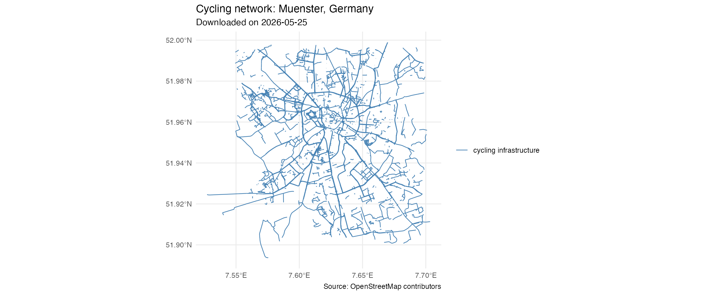
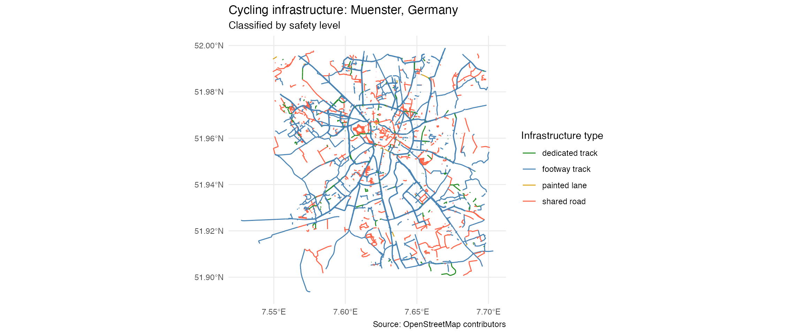
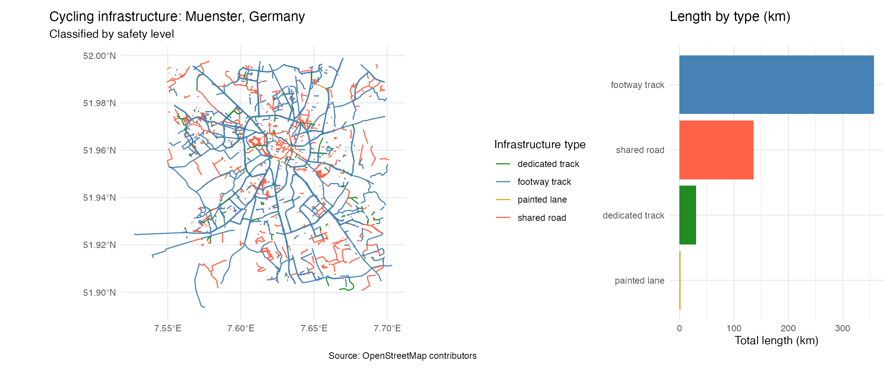
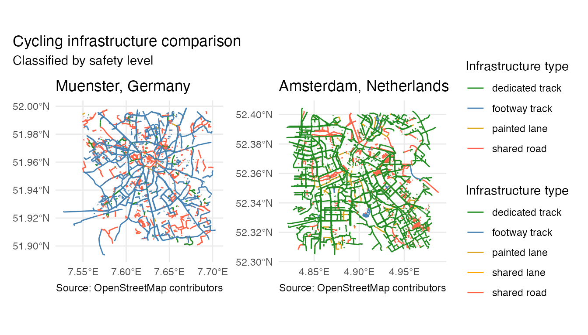

vignettes/introduction.Rmd
introduction.Rmdcyclinginfra is an R package for downloading, classifying and visualising urban cycling infrastructure using freely available OpenStreetMap (OSM) data. Built as part of the Spatial Data Science with R course at the University of Münster 🇩🇪
Given any city name, cyclinginfra fetches the full cycling network from OSM and classifies every road segment by safety level, from physically separated tracks all the way down to roads where bikes and cars share space with no markings.
Safety is measured by physical separation from motor traffic. A dedicated track scores highest because it is fully separated. Completeness refers to the percentage of the road network that has any form of cycling infrastructure.
| Level | Type | Description |
|---|---|---|
| 🟢 1 | dedicated track |
Fully separated from motor traffic |
| 🔵 2 | footway track |
Shared with pedestrians, separated from cars |
| 🟡 3 | painted lane |
Bike lane painted on road |
| 🟠 4 | shared lane |
Shared with cars, light marking only |
| 🔴 5 | shared road |
Bikes permitted on normal road, no dedicated space |
The security while riding a bike it’s not just a convenience, it’s also an important factor that determines whether a person will use the bike as their primary way of moving. The cities that present a good bike infrastructure separated from the traffic, Amsterdam for instance, tend to have a larger number of bike users. The motivation to pursue this project also comes from the personal experience during these months lived in Münster. The quality of the bike infrastructure in this city along with the active community has motivated me enough to also purchase and use a bike during my stay. That said, evaluating and comparing the quality of these infrastructures between cities is quite difficult (data is dispersed, not standarized or no publibly accessible). For that, OSM offers an open data source that is well mantained that covers practically all cities around the globe. This package uses the data provided by OSM to convert the available labelling into a classification of security levels. As study cases, we have Münster and Amsterdam, two cities known by their strong bike culture. These two are somehow different from one another, letting us show the capabilities of the package and real differences in between both urban models.
The package ships two example datasets, munster and
amsterdam, each a cycling_network object
containing the OSM cycling infrastructure of the respective city as
sf LINESTRING geometries with an osm_tag
column describing the type of infrastructure.
In order to prove that the package actually works and as a way to prove its relevance, here is a little piece of code that executes everything learnt:
library(cyclinginfra)
# load the pre-downloaded cycling network of Muenster
data(munster)
print(munster)## cycling_network object
## City : Muenster, Germany
## Download date: 2026-05-25
## Network lines: 4715 segments
## CRS : EPSG:4326
plot(munster)
# classify the infrastructure
munster_classified <- classify_bike_infrastructure(munster)
print(munster_classified)## cycling_classification object
## City : Muenster, Germany
## Download date: 2026-05-25
## Segments : 4715
##
## Infrastructure summary (km per type):
##
##
## |infra_type | total_length_km|
## |:---------------|---------------:|
## |footway track | 357.57|
## |shared road | 135.98|
## |dedicated track | 30.34|
## |painted lane | 1.82|
# create the safety map
plot_cycling_safety_map(munster_classified)##
## Infrastructure summary for Muenster, Germany :
##
##
## |infra_type | total_length_km|
## |:---------------|---------------:|
## |footway track | 357.57|
## |shared road | 135.98|
## |dedicated track | 30.34|
## |painted lane | 1.82|

Before downloading anything, get_cycling_network()
checks wheter we have a copy of that city in our cachñe. If it finds a
copy, then it will load it directly without making a query to OSM.
However, if it doesn’t exist, it will ask OSM and then store a copy of
the city in the caché for future queries, this way next executions will
be way faster.
For this reason, in this vignette, data(munster) and
get_cycling_network("Muenster, Germany") would hace the
same data that is already stored in the caché of the package. This is
also allows R CMD check to work without internet
access.
# compare Münster and Amsterdam
data(amsterdam)
amsterdam_classified <- classify_bike_infrastructure(amsterdam)
compare_cities(munster_classified, amsterdam_classified)
In Münster’s classification there ir a clear pattern, the “footway track” (Shared with pedestrians, separated from cars) is the main type of road, followed by “shared road” (Bikes permitted on normal road, no dedicated space). “Dedicated track” and “painted lane” are almost non existent. Adding more, there are no roads classified as “shared lane”, it seems like either this type of road is not used or not labeled like this in Munster’s network.
Now, let’s compare to the city in the neighbor country, Amsterdam. While in Münster there is a predominance of shared roads (footway track and shared road), in Amsterdam it is very clear that “dedicated track” is the most prominent (we can see it through the green network taht extends through the city). This quite coherent with Amsterdam’s reputation on being a benchmark on bike infrastructure as the show star of the city. Münster seems to be more of a role model in coexistence between pedestrians and bike traffic.
Let’s also take a look at the connectivity analysis, while Münster has a lot of green (so it’s in fact well connected), there is also a considerable amount of red segments (isolated) throughout the residential parts. This may be an indication of separation between the network outside the city center, which can actually correlate to more dangerous roads to ride on.
Obviously, there are some limitations in the way we interpret these results. Firstly, the classification is solely based on how the contributors of OSM labelled each segemnt, which may not be consistent throughout all cities or mappers (this might affect on the comparison of cities for instance). And secondly, this classification is based only on the type of road, without taking into account factors like the amount of traffic or speed limits.
In practice, instead of loading pre saved data, you would download the network directly from OSM:
# download directly from OSM (requires internet connection)
munster <- get_cycling_network("Muenster, Germany")
print(munster)
plot(munster)
munster_classified <- classify_bike_infrastructure(munster)
print(munster_classified)
plot_cycling_safety_map(munster_classified)
# compare with another city
amsterdam <- get_cycling_network("Amsterdam, Netherlands")
amsterdam_classified <- classify_bike_infrastructure(amsterdam)
plot_cycling_safety_map(amsterdam_classified)
# side-by-side comparison of two cities
compare_cities(munster_classified, amsterdam_classified)
# connectivity analysis
analyze_connectivity(munster)LLM tool used: Claude (Anthropic) — Claude Sonnet 4.5
Purpose: Claude was used throughout the development of this package for:
osmdata, classification logic, etc.)R CMD check notes, CRS handling in sf)Percentage of code LLM-generated: 35%